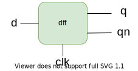
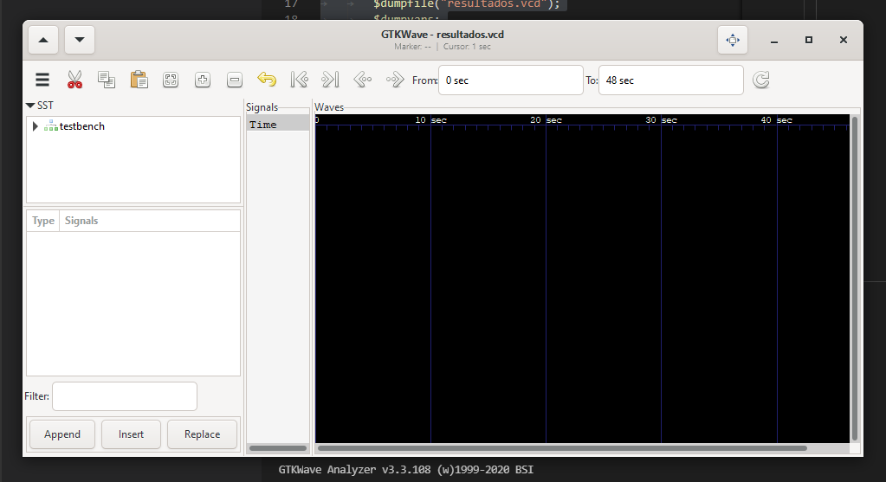
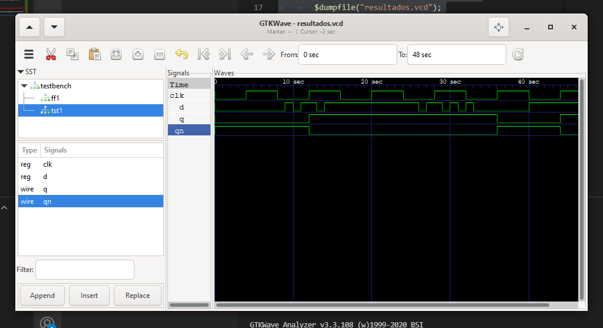
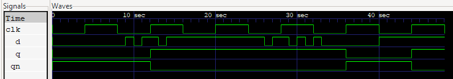

Escribiendo un Programa Sencillo¶
Esta sección describe en detalle el proceso de diseño, compilación y simulación de un flip-flop tipo D en verilog. Los archivos que contienen la descripción del flip-flop y requeridos para la simulación se pueden obtener en este link a Google Drive.
Descripción del circuito¶
Se quiere implementar un flip-flop tipo D, cuyas entradas y salidas se muestran en la siguiente imagen:
{kind=link}
Este módulo tendrá entradas d y clk y salidas q y qn y debe replicar correctamente el funcionamiento de un flip-flop tipo D.
Implementación en Verilog¶
Para el proceso de simulación se crean además dos módulos adicionales: tester y test_bench, los cuales se pueden apreciar en la siguiente imagen
{kind=link}
A continuación se presentan dichos módulos, los cuales se colocaron en archivos separados:
dff.v¶
Este archivo contiene el módulo que describe el funcionamiento del flip-flop D:
module dff(d,clk,q,qn);
input d,clk;
output reg q,qn;
//Se inicializan los valores de los regs
initial begin q=0; qn=1; end
//Se realizarán cambios unicament en flancos positivos del reloj
always @(posedge clk)
begin
q <= d;
qn <= !d;
end
endmodule
Este módulo posee entradas clk y d y sus salidas son q y qn, las cuales pueden cambiar de estado únicamente en los flancos positivos del reloj. El bloque initial es utilizado para inicializar las los valores de los tipo reg.
tester.v¶
Este archivo contiene el módulo encargado de generar las señales de prueba para la simulación, sus salidas son las entradas del flip-flop y viceversa:
module tester (q,qn,clk,d);
input q,qn; //Definimos las salidas del módulo flipflop como entradas al tester
output clk,d;
reg clk,d;
//Un bloque always para la señal de reloj, con un periodo de 8 s
always
begin
#4 clk=!clk;
end
//Se hace uso de un bloque initial para generar las señales de prueba
initial
begin
clk=0;
//Indicamos el archivo de resultados
$dumpfile("resultados.vcd");
$dumpvars;
//Genramos la senal de prueba d
d=0; #9 d=1; #1 d=0; #1 d=1; #2 d=0; #1 d=1; #12 d=0;
#1 d=1; #2 d=0; #1 d=1; #1 d=0; #1 d=1; #1 d=0; # 7 d=1;
#8 $finish; // Terminamos la simulación
end
endmodule
Este módulo genera la señal de reloj haciendo uso de un bloque always y los retardos introducidos por #n, siendo n las unidades de tiempo correspondientes al retardo. De esta forma el reloj cambia su valor entre 0 y 1 cada 4 unidades de tiempo para obtener una señal cuadrada con un periodo de 8 unidades de tiempo (segundos por defecto).
Algo similar se hace en el bloque initial para variar la señal d de forma arbitraria. En adición a esto, en el bloque initial se encuentran las system functions requeridas para descargar los resultados de la simulación en el archivo resultados.vcd.
Finalmente el comando $finish indica el final de la simulación, para que esta no continúe indefinidamente.
testbench.v¶
Este es el módulo top. Consiste en una decripción estructural de las conexiones entre el módulo tester y el módulo dff:
`include "dff.v"
`include "tester.v"
module testbench;
wire clk,d,q,qn;
dff ff1(d,clk,q,qn);
tester tst1(q,qn,clk,d);
endmodule
Se puede pensar en este módulo como la protoboard donde se coloca el flip-flop y se conecta al tester por medio de cables. Es importante incluir los archivos que contienen los módulos tester y dff instanciados, ya que de otra forma el compilador retornará un error.
Compilación y Simulación¶
Una vez realizadas las descripciones en Verilog de nuestros módulos, procedemos a la etapa de compilación y verificación.
iVerilog¶
Para compilar el diseño realizado ejecutamos el siguiente comando desde una terminal en el directorio que contiene los tres archivos descritos:
iverilog -o dff_out test_bench.v
De esta forma llamamos al compilador y le indicamos que almacene la salida compilada en el archivo dff_out. Además indicamos que compile a partir del archivo test_bench.v, donde se encuentran las instancias de nuestro flip-flop y probador.
Una vez obtenido el archivo compilado, es necesario ejecutar el simulador de iVerilog; vvp procesa el archivo compilado para obtener como resultado las señales en el tiempo correspondientes al diseño implementado:
vvp dff_out
Esto genera el archivo resultados.vcd según se indicó en la función $dumpfile dentro del probador.
GTKWave¶
Finalmente, una vez obtenido el archivo de resultados, este puede ser visualizado con el software GTKWave de la siguiente manera:
gtkwave resultados.vcd
Lo que desplegará la interfaz gráfica del programa:
Luego, accediendo a la instancia tst1 puede desplegar las ondas correspondientes haciendo doble click en cada una:
Las señales obtenidas se presentan con mayor detalle en la siguiente imagen:
Podemos ver en primer lugar que se cumple el comportamiento esperado para un flip-flop tipo D. El valor de sus salidas Q y Qn no varía al cambiar su entrada D si no es en un flanco positivo de la señal de reloj CLK. De esta manera, validamos el funcionamiento del diseño realizado.